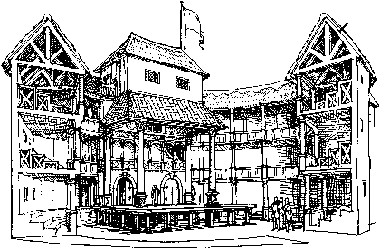

Shakespeare profesyonel yaşamı boyunca hep aynı tiyatro kumpanyasıyla çalışmıştır. “Lord Chamberlaine’s Men” (Başmabeyincinin Oyuncuları) olarak tanınan grup Kraliçe I. Elizabeth’in ölümü üzerine 1603’te kral olan I. James’in himayesine girdikten sonra “King’s Men” (Kralın Oyuncuları) adını alır.
1590’larda bir endüstri haline gelen ve pazar hariç her gün oyun sahneleyen tiyatrolar toplu olarak haftada on beş bin kadar seyirci çekiyorlardı. Tiyatro temsillerinin en yoğun olduğu aylar eylülden aralık sonundaki Noel’e kadar olan süreydi. Genellikle yaz aylarında başgösteren veba salgınları nedeniyle tiyatrolar zaman zaman kapatılır, böyle zamanlarda kumpanyalar turneye çıkarak ülkeyi dolaşırlardı. Bazen de saraya çağrılarak temsillerini Kraliçe I. Elizabeth’in ve daha sonra Kral I. James’in huzurunda sunarlardı. Shakespeare’in hangi oyunlarının hangi tarihlerde sarayda temsil edildiği belgelerde vardır.
Shakespeare’in yaşadığı dönemde bugün sinemada olduğu gibi “yıldız” sistemi geçerliydi. Ancak oyuncular alkışlanıp övülürken oyunculuk mesleği hor görülmüş, ahlakın bekçiliğinden sorumlu yerel yöneticilerin, din adamlarının ve sansür kurulunun gözü hep tiyatronun üzerinde olmuştur. Shakespeare’in kumpanyasının yıldızı özellikle trajedilerde ünlenen Richard Burbage’dı. Burbage “Tiyatro”yu yaptıran James Burbage’ın oğludur. Will Kempe ve Robert Armin ise kumpanyanın en sevilen komik aktörleriydi. Bu oyuncuların ölümlerinden yıllar sonra bile hatırlanmaya devam ettiklerini görüyoruz. Tiyatrolardaki tüm oyuncular erkekti; kadın rolleri kadrodaki en genç aktörler tarafından canlandırılırdı. İzleyicilerin gerçekçilikle ilgili bu ve buna benzer sorunları düşgüçlerinin yardımıyla aştıkları anlaşılıyor.
Sahnede hemen hiç dekor bulunmadığından belirli bir mekânın canlandırılması sembolik birkaç parça sahne eşyası, metnin içine serpiştirilmiş yer betimleyici sözler ve izleyicinin düşgücünü seferber etmesi sayesinde gerçekleşirdi. Temsiller gündüz yapıldığından bugünkü gibi izleyicilerin oturduğu kısmı karartıp sahneyi aydınlatma veya ışığı azaltıp çoğaltma olanağı yoktu. Bu durumda karanlığı ifade etmek için bazen meşaleler yakılır, bazen oyuncular ellerinde mumla veya gecelik entarisi giyerek sahneye çıkarlardı. Ayrıca oyun yazarının diyaloglara gece veya gündüz, karanlık veya aydınlık olduğunu belirten sözler koyarak ışık sorununu metnin içinde çözdüğü de görülür. Özellikle tarihi oyunlarda iki ordunun savaşmasını gerektiren sahneler borazan ve top sesleri eşliğinde iki veya dört kişinin stilize bir biçimde döğüşmesi ile canlandırılırdı. Bu da yine düşgücünü devreye sokan, aynı zamanda pratik ve (kumpanyadaki aktör sayısının çok büyük olmadığı düşünülürse) ekonomik bir yöntem sayılır.

Tipik bir Elizabeth dönemi Tiyatrosu
(1965’te C. Walter Hodges tarafından gerçekleştirilen çizim.)
Dekorsuz sahneye karşın efektler ve kostümler oldukça çarpıcıydı. Sahne efektleri arasında gökgürültüsü, top sesi, havada tel ve makaralar sayesinde uçan doğaüstü, tanrısal yaratıklar ve tabii müzik önemli bir yer tutar. Oyuncuların temsillerde giydikleri kıyafetler de olabildiğince görkemliydi. Bunlardan bazılarının soyluların elden çıkarttıkları giysiler olduğu sanılıyor. Giyimde tarihselliğe bağlı kalmadıklarını, örneğin 14. yüzyılda geçen Richard II adlı oyunun Shakespeare döneminde giyilen kıyafetlerle oynandığını biliyoruz. Shakespeare’in toga giydikleri sanılan Romalı karakterleri tarihe sadık kostümün neredeyse tek örneğini teşkil ederler. Bakireler beyaz giysileri, hortlak ve hayaletler deri kıyafetleri ile sahneye adım attıklarında hemen tanınırlardı. Bir karakterin ıslak elbiselerle sahneye çıkması, deniz kazasından kurtulduğuna işaretti. Oyundaki karakterlerden birinin kişiliğini veya cinsiyetini gizlemesi ya da başka birinin kişiliğine bürünmesi gerektiğinde ayrıntılı saç ve makyaj değişikliği yerine kıyafet değişikliği veya takma bir sakal yeterliydi.
Dönemin oyunculuk tarzının bugünkünden farklı olduğu bir gerçek ancak bunun nasıl bir tarz olduğu konusunda fikir birliği yok. Konu üzerinde çalışanların bir kısmı bu tarzın mimik ve nüansa olanak verdiğini söylerken büyük bir çoğunluk stilize olduğu, kalıplara, belirli jest ve hareketlere dayandığı görüşünü savunuyor. Bazı izleyicilerin sahne etrafında gezinip aktörlere laf attığı ve herkesin birbirini görebildiği aydınlık bir ortamda oyuncuların güçlü bir ses tonu ve belirgin jestler kullanmak zorunda kalacaklarını düşünmek pek de yanlış sayılmaz. Nüanslı ve ince jestlere dayanan bir oyun tarzı ancak küçük ve kapalı tiyatrolar için söz konusu olabilir. Ancak oyuncuların oyun tarzlarını mekâna göre değiştirdiklerine dair elimizde herhangi bir belge yok.
Dönemin estetik anlayışı sanatın doğayı yansıtması gerektiğini söyler. O dönemde yansıtma kuramı sadece sanat eserleri için değil tiyatro oyunculuğu için de geçerli olmalı ki Hamlet oyunculara insan doğasına sadık kalmalarını öğütler. Ancak doğanın yansıtılması farklı dönemlerde farklı şekillerde anlaşılmıştır. Acaba Shakespeare döneminde “yansıtma”, “canlandırma” ve “natüralizm” oyuncunun kendisini oynadığı rolle bütünleştirmesi anlamına mı geliyordu? Büyük ölçüde kalıplara dayanan bir oyunculuk stili, aktörlerin aynı hafta içinde birkaç farklı rolde sahneye çıkmaları gibi faktörler Stanislavski metoduna benzer yöntemleri dışlıyor gibi görünebilir. Öte yandan bir oyuncunun gelenekselleşmiş jestler kullanmasının, kendini canlandırdığı karakterle psikolojik açıdan bütünleştirmesine engel teşkil edip etmediği de düşünülmeye değer bir konudur.
Provalar hakkında maalesef elimizde çok az belge var. Bugünkü anlamda “yönetmen” sayılmasa da her kumpanyada aktörlere yol gösterici konumunda bir oyun sorumlusunun varlığından söz edebiliriz. Bu kişi bazen oyun yazarının kendisidir. Hem oyun yazarı hem aktör olan Shakespeare de provalarda diğer oyunculara yol göstermiş olabilir. Aktörlere ezberlemeleri için verilen metinler genellikle oyunun tümü değil, sadece canlandıracakları karaktere ait satırları içeren metinlerdi. Diğer karakterlere ait satırlara ancak aktörün söze hangi noktada gireceğini göstermek amacıyla yer verilirdi. Genel prova sayısının yok denecek kadar az olduğu anlaşılıyor. Oyuncular rollerine tek başlarına çalışırlar, şölen, savaş, cenaze gibi törensel sahneler hep belirli bir tarzda oynandığından bunlar için ayrıca prova gerekmezdi. Yılda yaklaşık kırk değişik oyun sahneye koyan bir kumpanyada provalar için ayrılan sürenin epey kısa olduğunu varsayabiliriz. Oyuncuların ezber yetenekleri ve bellekleri çok güçlü olmakla birlikte oynanan oyun ve üstlenilen rol sayısının fazlalığı nedeniyle temsillerde suflöre mutlaka ihtiyaç vardı.
Shakespeare döneminin tiyatro izleyicileri farklı sınıflardan, farklı kültür, refah ve eğitim düzeylerinden gelen kadın ve erkeklerden oluşuyordu. Aristokratlardan tüccarlara, hukuk öğrencilerinden bakkal çıraklarına kadar geniş bir yelpazeyle karşı karşıyayız. Yine de orta ve üst sınıf izleyicilerin sayıca alt sınıf izleyicilerden fazla olduğu tahmin ediliyor. Tiyatroya hiç gitmeyen gruplar ise Püritenler ve Anglikan kilisesinden kopan diğer bazı dini cemaatlerdi.
O dönemin tiyatro izleyicileri şiir dili ile yazılmış ve karmaşık tümce yapıları içeren oyunları algılamaya bizlerden daha yatkındılar. Sözlü edebiyatın bir anlamda devam ediyor olması, insanların tiyatroya gitme alışkanlıkları ve her pazar kilisede dinledikleri, özenli bir dille sunulan vaazların yarattığı kulak dolgunluğu gibi faktörlerin bunda önemli bir payı vardır. Altıncı sınıfa kadar okuyan herkesin klasik yazarları bir ölçüde tanıdığını göz önüne alırsak, oyunlarda mitolojiye ve klasiklere yapılan göndermelerin önemli bir kısmını algılamakta fazla zorlanmadıkları sonucuna ulaşırız. Ancak sessizliğin hiçbir zaman tam olarak sağlanamadığı tiyatrolarda izleyicilerin bazı sözcük ve dizeleri duyamamaları olasılığını da akıldan çıkarmamak gerekir. Shakespeare’in çağdaşı Ben Jonson’un izleyicilerden oyunları “görmeye” değil “dinlemeye” gelmelerini istemesine karşın, izleyicilerin hiç olmazsa bir bölümü için görselliğin sözcüklere ağır bastığını söyleyebiliriz.
Shakespeare’in Oyunlarının Yayımlanması
Dönemin diğer oyun yazarları gibi yılda ortalama iki oyun ürettiği sanılan Shakespeare’in özgün elyazmalarından maalesef hiçbiri elimizde yok. Uzmanlara göre, Shakespeare bir oyunu tamamladığında elyazması metni bazen temiz kopya bazen de temize çekilmemiş müsvedde halinde hemen oyun sorumlusuna teslim ederdi. O andan itibaren oyun, yazarın değil kumpanyanın malıydı artık. Kolay okunmayan, kenarlarına dizeler sığdırılmış müsveddeler bir başkası tarafından temize çekilirdi. Shakespeare’in kaleme aldığı özgün metinlerde perde ve sahne bölüntüleri olmadığı gibi genelde olayların geçtiği mekân, oyuncuların sahneye giriş çıkışları ve kullanılacak efektler hakkında pek fazla açıklama bulunmadığı sanılıyor. Bu tür notlar ve açıklamalar, oyun sorumlusunun kullanımı için hazırlanan özel kopya üzerinde işaretleniyordu. Kumpanya açısından çok değerli olan bu kopya zaman içinde yıprandığında yenisi hazırlanırdı. Oyuncuların kullandığı ve sadece kendi rollerini içeren kopyalar da yıprandıkça yenilenirdi.
Telif hakkının olmadığı bu dönemde gişe hasılatını düşünen kumpanyalar doğal olarak oyunların basılmasını ve rakip kumpanyaların eline geçmesini istemiyorlardı. Buna karşın Shakespeare’in oyunlarından ondokuzu yani yarısı kendi yaşamı sırasında yayınlanmış. Genel kanı sözkonusu oyunların, birkaç istisna dışında, yazarın ve ortak olduğu kumpanyanın izni olmadan basıldığıdır. Bunların tümü quarto yani sayfa boyutu olarak nispeten küçük baskılardı. İyi ve kötü olarak sınıflandırılan quarto’lardan, iyi quarto denilen basımlar ya Shakespeare’in özgün metinlerinin kopyalarına ya da oyun sorumlusunun açıklamalar ve notlar içeren özel kopyasına dayanır. Bu kopyaların matbaaya izinsiz olarak nasıl ulaştığı konusunda kesin bir bilgi yok. Kötü quartolar ise basımcıların ele geçirdiği bozuk ve okunaksız müsveddelere veya oyuncuların hafızasına dayanan metinlerdir. Kendi rolünü zaten ezbere bilen bir aktör (ki bazen aynı aktörün bir oyunda iki ayrı rol üstlendiği olurdu) diğer karakterlerin rollerini de oyun sırasında iyi kötü ezberleyebilirse belleğindeki bozuk metni yayımcıya satabilirdi. Gerek Romeo ve Juliet’in gerek Hamlet’in korsan baskıları o denli bozuktu ki kumpanya bu iki oyun kötü bir ün kazanmasın diye eldeki yedek kopyalardan ikisini (belki de Shakespeare’in müsveddelerini) basımcıya göndermek zorunluluğunu hissetmiş, böylece oyunların iyi sayılabilecek ikinci quarto baskılarına olanak sağlamıştır. Ancak Fredson Bowers’ın işaret ettiği gibi, III. Richard’ın ve V. Henry’nin yine çok kötü olan quartoları yayımlandığında kumpanya daha temiz metinlerin basılmasına yardımcı olmamıştır.
Shakespeare’in oyunlarının ilk toplu basımı ölümünden sonra aynı kumpanyadan iki oyuncu, John Heminges ve Henry Condell, tarafından 1623 yılında gerçekleştirildi. Bu baskıda Perikles ve İki Soylu Akraba adlı oyunlara yer verilmemiştir. Yazarın bu iki dostu oyunları folio boyutunda (yani matbaa kâğıdını quarto’lardaki gibi sekiz küçük sayfa yerine dört büyük sayfa halinde katlayarak) yayınladıkları için bu tek ciltlik basım İlk Folio olarak adlandırılır. Heminges ve Condell baskıyı hazırlarken oyun sorumlusu tarafından kullanılan elyazmalarının kopyalarından, bazen de mevcut quarto baskılarından yararlanmışlardır.
İlk Folio ile quarto’ları karşılaştırdığımızda metinler arasında farklılıklar görürüz. Sözcük düzeyindeki ufak tefek farkları açıklamak kolaydır. Gerek elle çoğaltma sırasında gerek dizgide dikkatsizlik sonucu meydana gelen hataların yanı sıra, özgün elyazmasının yer yer okunaksız olmasından doğan hatalar nedeniyle de metinler arasında bazı farklılıklar oluştuğunu biliyoruz. Sağlam ve güvenilir kaynaklara dayanmasına karşın uzmanlar İlk Folio’da da çok sayıda hata olduğu görüşündedirler. Çoğu sözcük düzeyindeki bu hataların azlığı veya çokluğu kaynak metnin okunaklılığı kadar dizgiyi yapan kişilerin (bu konuda tahminler iki ile dokuz kişi arasında değişiyor) ustalığı ve tecrübesiyle orantılıdır. Aynı oyun metninin değişik bölümleri üzerinde çalışan farklı dizgicilerin farklı kalitede metinler ürettiklerini görüyoruz. Özellikle quarto’lardaki birtakım hataların ise dizgicilerin metne sık sık bakmak yerine birkaç satırı birden okuyup akılda tutmaya çalışmalarından, bazen daha da ileri giderek sözcükleri değiştirmelerinden kaynaklandığı sanılıyor.
Ancak bazı oyunların quarto ve İlk Folio metinleri arasında sözcük düzeyinde kalmayan ciddi farklılıklar görmekteyiz. Örneğin Hamlet’in iyi quarto ve İlk Folio metinleri arasında toplam 310 satırlık fark vardır; iyi quarto Folio metninde bulunmayan 230 satır, buna karşın Folio metni quarto’da bulunmayan 80 satır içerir. Metinler arasındaki bu tür farkların yazarın zaman içinde oyunda yapmış olduğu değişikliklerden ya da provalar sırasında veya oyun temsil edilmeye başlandıktan sonra yapılan ekleme ve çıkartmalardan kaynaklandığı sanılmaktadır. Shakespeare’in oyunlarını okurlar için değil sahnede temsil edilmek üzere yazdığını, bu nedenle kendi yaşamı boyunca sabit değil değişken oyun metinlerinin söz konusu olduğunu düşünürsek, iyi metinler arasında bile farklar bulunmasını yadırgamamamız gerekiyor.